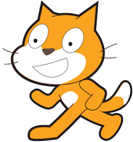

No-Code
La programación "no code" implica crear aplicaciones sin escribir código tradicional. Se utilizan herramientas visuales para diseñar sistemas arrastrando y soltando componentes predefinidos. Aunque es amigable para personas sin experiencia en programación, puede ser limitada en términos de personalización y complejidad en comparación con la programación convencional.
Más información
